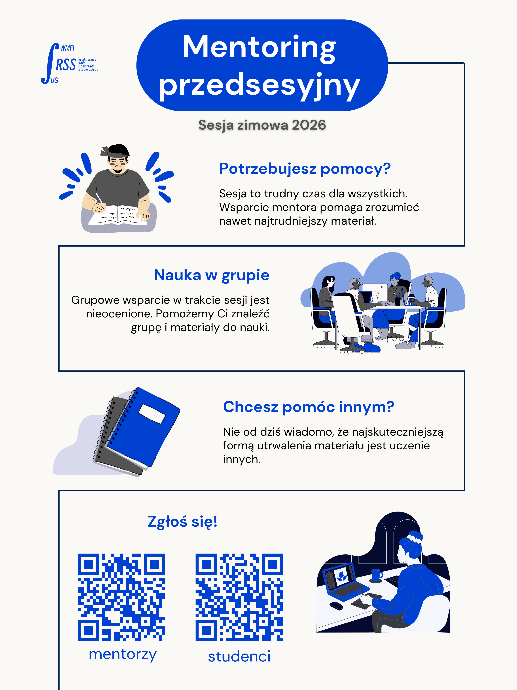
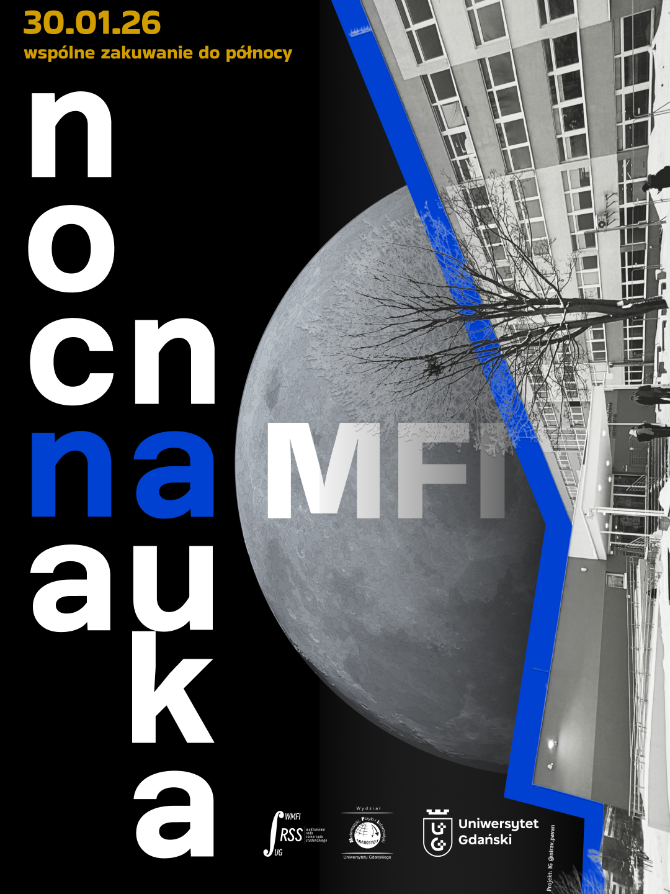

Studia to gra zespołowa. Wiemy jak ciężka może być sesja, dlatego uruchomiliśmy system wsparcia z którego korzystają obie strony.

To nasz flagowy program wsparcia, w którym studenci ze starszych roczników pomagają młodszym kolegom i koleżankom przetrwać ich pierwszą, najtrudniejszą sesję egzaminacyjną. Prowadzący również się w to angażują, udostępniając przydatne materiały do nauki.
Proces jest bardzo prosty: przed sesją udostępniamy formularze Microsoft Forms – osobny dla studentów poszukujących pomocy i osobny dla chętnych mentorów ze starszych lat. Na podstawie udzielonych odpowiedzi dobieramy Was w idealnie dopasowane pary, abyście mogli wspólnie przerabiać materiał i wymieniać się patentami na trudne przedmioty.
A co zyskują mentorzy? Oprócz satysfakcji z pomocy innym, każdy mentor, który przekroczy określoną liczbę godzin wsparcia, otrzymuje oficjalny certyfikat dziekański! To wspaniałe potwierdzenie zdobytych punktów za wolontariat, które świetnie prezentuje się w CV oraz na profilu LinkedIn.

Wielkim finałem naszego wsparcia przed najważniejszymi kolokwiami i egzaminami jest akcja Nocnej Nauki. To moment, w którym przejmujemy Wydział MFI po godzinach! Otwieramy sale w Instytucie Matematyki aż do północy, dając Wam przestrzeń do wspólnej, efektywnej nauki.
Zamiast stresować się w samotności w swoim pokoju, możecie przyjść na wydział, uczyć się w grupie i rozwiązywać zadania na tablicach w salach lekcyjnych. Aby nikt nie opadł z sił, Samorząd zapewnia darmową kawę, Red Bulle oraz wodę.
Pusty wydział po zmroku ma swój niepowtarzalny urok. Jest bardzo "coMFI", produktywnie, ale też z ogromną dawką uśmiechu. To nie tylko czas zakuwania, ale i świetna integracja przy wspólnych notatkach!